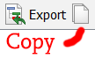
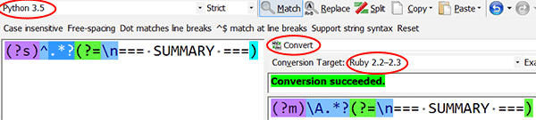
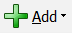
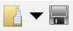

The Huge RegexBuddy Tutorial
TL;DR
Simply put, RegexBuddy (RB for short) may be the only program you'll ever need to create and test your regular expressions, whichever programming language and regex engine you use. To get started, get the free RegexBuddy trial.
With that said, if you participate on forums and StackOverflow, you may like to share links to patterns you've tested, and if so you may also want to use tools mentioned on my main regex tools page, as RegexBuddy does not have a regex sharing service at this time.
When he finished resting, God created RegexBuddy
RegexBuddy on other platformsRegexBuddy is a Windows program. There's nothing like it on 'nix or OSX, and there probably never will be—for the simple reason that being intimate with that many regular expressions flavors is a life's work. If you're on linux or OSX and want to do some serious regex work, your best option is to run RegexBuddy with virtualization software such as VMWare, Parallels or Wine. For Wine, read this first.
About this page
I've been one of RegexBuddy's many rabid fans for a while now. This tutorial aims to give a comprehensive introduction to RB's features. I hope to share that constant feeling of awesome one has when working in RB.
I set out with the goal of writing a thorough review of a product I know intimately. A week later, I ended up with something that feels more like a second manual.
At the top of most topics, I've added a link that looks like this: (direct link). This is to enable you to point others to that particular topic if you need to.
(direct link)
Jumping Points
For easy navigation, here are some jumping points to various sections of the page:
✽ Can you afford RegexBuddy?
✽ Who is behind RegexBuddy?
✽ What is RegexBuddy?
✽ RegexBuddy speaks your language
✽ Quick Start: A few tweaks so you can follow along
✽ RegexBuddy Interface 101: the Main Tabs
✽ RegexBuddy Interface 102: the Three Modes
✽ RegexBuddy Interface 103: the Pattern Boxes
✽ RegexBuddy Interface 104: the History Pane
✽ Create tab: Explain regular expressions
✽ Test tab: Write and apply regular expressions
✽ Debug tab: Trace the engine's matching path
✽ Use tab: Generate code for your programming language
✽ Convert tab: Translate a pattern to another regex flavor
✽ Library tab: Store and retrieve patterns
✽ GREP tab: Use a pattern to search your files
✽ Forum tab: Interact with other RB users
✽ RegexBuddy Interface 201: Miscellaneous controls
✽ Adding a Regex Flavor
✽ I know this matches! Is RegexBuddy broken?
✽ How to Copy your RegexBuddy Settings to Another Machine
✽ Tweaking your RegexBuddy setup with AutoHotkey
✽ Misc Tips
✽ Wish List
✽ Related Links
(direct link)
Can you afford RegexBuddy?
Let's get the money question out of the way. Can you afford RegexBuddy? That depends. If you're a teenager trying to scrape the web pages of your high-school's year book, maybe not. If you're a programmer who gets paid to write code, there's a good chance. RB costs about forty bucks. But you don't have to decide now: you can get started with the free RegexBuddy trial.In my view RegexBuddy is one of those programs that are worth their weight in golden bytes. Nearly all of the examples on this website were tested in RB. That being said, RB is not perfect—what is?—and a number of committed users pester Jan with minor feature requests, to which he usually responds.
(direct link)
Who is behind RegexBuddy?
RegexBuddy is the brainchild of a cool dude called Jan Goyvaerts. You can see him here proudly wearing that seems to be a fake RexEgg shirt while (I'm guessing) holding a RexEgg mug in his left hand and a RexEgg pen in the right (off-camera).To implement RegexBuddy's cross-language, cross-engine features, Jan has to stay abreast of several dozen regular expressions flavors. This makes him one of the world's foremost experts on regular expressions.
Among other things, Jan is…
✽ the co-author of the Regular Expressions Cookbook, 2nd Ed, which is one of the only two regex books worth reading.
✽ the author of the regular-expressions.info website, which is the top-rated regular expressions website in Google, a rank to which RexEgg is unlikely to catch up before Jan retires.
✽ the author of the proprietary JGsoft regex engine, one of the most powerful regex engines around, which powers RegexBuddy and Jan's other software products.
✽ the author of a brilliant regex-friendly text editor called EditPad Pro (a free EditPad Pro trial is available) and of a powerful text-processing tool called PowerGREP (you can download a free PowerGREP trial). Both of these use the afore-mentioned JGsoft regex engine.
✽ the owner of two of the legendary (and now rare) DataHand keyboards.
✽ the co-star (next to Johnny Depp) of the long-awaited Lord of the Regex.
One of the items on this list is fictional. Can you tell which? To earn a free RegexBuddy trial, fedex your answer to Bill Gates.
(direct link)
What is RegexBuddy?
RegexBuddy is a tool that helps you at all stages of a regular expression's life.It can help you:
✽ Create and test regular expressions for the specific regex engine of your target platform—Python, Java, .NET, JavaScript, C, PHP, Perl and countless others.
✽ Perform real actions on real text and even web pages: extract all matches in a document; decorate extracted information to build a useful list; perform complex replacements; split a file into several components.
✽ Either build patterns with expert assistance as you tell the program the kind of tokens you'd like to insert, or
✽ build patterns by typing them in yourself. Either way, RegexBuddy gives you instant feedback on the matches in your text.
✽ Switch back and forth between potential regex variations using a pattern "scratch pad".
✽ Manage your favorite expressions by saving them to a library.
✽ Generate code to integrate your regular expressions in a target language—and customize that boiler-plate code by defining templates.
✽ Compare what a regex pattern (or, more usefully, a single token) means in various engines.
✽ Translate a regex pattern from the syntax of one regex engine to that of another engine.
✽ Understand patterns you inherited by reading plain-English token-by-token explanations.
✽ Export such explanations in various formats such as text and html.
✽ Debug an expression by observing the path followed by the regex engine.
✽ Match or replace text in files thanks to the integrated GREP tool.
✽ And more (really!)
(direct link)
RegexBuddy speaks your language
When you create or test a regular expression in RegexBuddy, you select its target environment.
Since different languages use different regex engines which differ in features and behavior, you'll want to specify whether you're working in C#, Java, Python, Ruby etc. But it gets more specific. Regex engines are constantly updated, so you'll also want to tell RegexBuddy which version of the engine or language you're working with—for instance Java 13 or PCRE 25.6. (Yeah I know, these might not be out yet.) RegexBuddy knows all these details!
Through these combinations of engines, languages and versions, RegexBuddy supports over two hundred target environments. You can even add flavors whose features you define yourself.
You don't have to look at this Smörgåsbord of languages in the drop-down list: at the top of the list, after you select More applications and languages (highlighted in yellow on the image), the full list appears with check boxes allowing you to populate the everyday drop-down you'll be using.
Translating between languages
Sometimes, you have a PCRE regex and need to make it work in JavaScript. Will it work? JavaScript's regex flavor is so crippled that there's a good chance a token won't work and you will have to look for a different idiom. RegexBuddy lets you compare what tokens mean in different regex flavors, as well as translate from one flavor to another. We'll look at these features later.
(direct link)
Quick Start: A few tweaks so you can follow along
To call this section a quick start might be false advertising as this tutorial is taking you on a journey into the depths of RegexBuddy. By the end, you'll be well on your way to becoming a RegexBuddy ninja. But if you're planning to follow along, I thought I'd mention some quick adjustments so that your screen looks much like mine.Full-screen mode
Go ahead, maximize the RegexBuddy window if you haven't already done so. When working with regular expressions, there's a lot you need to keep track of. I can't work in RB unless it's in full-screen mode.
Default layout
On most of my screenshots, all eight of the main tabs are in a single row. If you're in a different layout, you may want to switch back to the default. Click the View menu (circled on the image) and save your layout if you like it (Custom layouts / Save layout), then pick Restore default layout. Unable to restore the default layout? See this tip.
Still in the View menu, make sure that Lock Toolbars is checked. This will prevent you from repositioning interface elements inadvertently.
Show controls as toggles
Some toolbar controls can either be shown as drop-down menus or as toggle buttons. To see the same as on my screenshots, click the Prefs menu (circled on the right), click the Operation tab and select the third option (Show options that can be changed with toggle buttons that indicate the "on" state).
Pimping up the interface
There are more tweaks we can do to the interface (colors schemes! fonts!), and we'll get into those later, but for now this will do. Let's dive into the interface.
(direct link)
RegexBuddy Interface 101: the Main Tabs
The RegexBuddy interface looks innocent and simple, but it hides a lot of power.Let's dive in!
The core of the interface—the section you need to understand first—are the eight tabs shown on the picture below. You can reposition the tabs so your list might be in a different order.
These eight tabs determine what we are doing:
1. explaining a regular expression (Create),
2. translating between flavors (Convert),
3. building a pattern and running it against sample text or files (Test),
4. tracing the engine's matching path (Debug),
5. integrating the pattern in your target language (Use),
6. storing and retrieving patterns from custom libraries (Library),
7. using the pattern to search your files (GREP),
8. interacting with Jan and RegexBuddy users (Forum).
In later sections, we'll look at each of these tabs.
(direct link)
RegexBuddy Interface 102: the Three Modes
When you work on a regular expression in RB, you select one of three modes, corresponding to the three main tasks we set out to perform with regular expressions:1. Match
2. Replace
3. Split
This selection takes place in the very top toolbar.
In Match mode, RegexBuddy highlights the matches in the text and builds additional views showing extracted components. In addition to matching, Replace mode lets you specify a replacement pattern, while Split lets you divide the sample text using the pattern as a delimiter.
Depending on which mode you select, the section below the toolbar presents a slightly different face. For instance, in Replace mode, there is a text box for the replacement pattern.
(direct link)
RegexBuddy Interface 103: the Pattern Boxes
Below the buttons for the three operating modes, you'll find the box where you develop your regular expression patterns.There are two main ways to work in this window:
1. Freehand regex writing. You just type your expressions in the window.
2. Assisted token insertion. You insert tokens by picking them from a list.
You can use both methods together. For instance, while I work in freehand mode 99% of the time, when I've forgotten the syntax for, say, a named capture group in C#, I just get RegexBuddy to insert it.
(direct link)
Assisted Token Insertion: two ways
There are two ways to have RB insert tokens for you.
- You can right-click in the text box for the pattern.
- You can go to the Create tab and use its "Insert Token" pull-down menu.
Unicode is one place where I find token insertion particularly useful. The insert pull-down allows you to insert:
- specific characters (such as \x{20AA} for ₪) which you select on a character map
- tokens to match specific scripts, such as \p{Hiragana}
- tokens to match specific categories, such as \p{Sm} to match a math symbol.
(direct link)
Syntax Highlighting
The various tokens are colored according to their semantic value.
For instance, on the picture, you can see that character classes have a lovely shade of ocher. In addition, when you move around the regex with the cursor, the closest nesting construct (such as parentheses or square brackets) is highlighted in aqua. See the aqua parentheses at the end of the line? The aqua makes it easier to know where you are and to identify closing parentheses.
You can customize colors in the Preferences menu, which is accessed by clicking the icon shown on the right (it lives at the top right of the interface). I keep the colors the way they are, but a decent easy tweak would be to use the provided "white on black" theme.
Love that color? Use it everywhere.
Anytime you see colored syntax in RegexBuddy, if you paste it in programs that understand rich text formatting, the coloring comes with it. The screenshot shows an RB regex in MS Word.
Jan tells me that Word messes up the colors by reducing them to a 16-color VGA palette while simple old WordPad does not mess them up.
(direct link)
Replace Text Box
In Replace mode, the regex pattern's text box shrinks to make space for a second text box.
That is where you specify the replacement pattern. If you've forgotten the back-reference syntax of your target engine, right-click inside the text box: RegexBuddy offers to insert the token for you.
(direct link)
RegexBuddy Interface 104: the History Pane
At the top right or RegexBuddy, you'll find a little box that I use all the time: the History pane.Jan intended for the History pane to be a scratch pad where you temporarily stash various versions of expressions you're working on. For that purpose, it works brilliantly. You can add, remove and rename patterns, and you can reorder the list.
What Jan didn't foresee is that some people would use the History pane to stash expressions on a semi-permanent basis. For that purpose, he had created the Library tab. But using the Library usually means you have to shift to another tab, and people are lazy. (You can actually create a layout where the library replaces the history pane.)
I spend most of my RB hours in the Test tab, and the History pane makes it easy to manage multiple expressions I'm working on. When I build something that I feel I might reuse, I move it to the library.
One way I like using the History pane is to name a number of presets after different regex engines. That way when I need to build something for C#, I just click the C# item and I'm ready to go.
As a result of the History pane's mission as a scratch pad, it lacks features that you'll soon miss if you use it a lot, such as saving different subjects for different patterns. Backups also involve some leg work, such as moving items to a library or messing with the INI file.
Warning: don't lose all your history
One thing that's happened to me too many times is that to delete a pattern, I've mistakenly clicked the "Clear All" button (circled on the right) instead of the Delete button. As of RB 4.6.1, there's no confirmation dialog. In my view that's a big problem that needs to be fixed as hours of work can too easily be lost. Don't be that guy!
In the meantime, I've provided a solution that you'll find later on the page: a AutoHotkey script that, in addition to providing some cool keyboard shortcuts, makes it impossible to click on the buttons of the History pane. In my view it's well worth spending the two minutes to install AutoHotkey just for this.
My two cents: the History pane should just be a special Library
Given the way many people are using the History pane, it seems to me that the history pane should just be a special library (history.rbl)—with all the benefits of a library, such as the ability to store dedicated subjects for each pattern. In fact Jan has announced that this is his exact plan.
Often, you want to use the same text for multiple patterns. Cloning text and patterns across multiple entries of a special ScratchPad.rbl library could be gracefully handled by an item on the revised History pane's menu.
A number of controls and menus complete the interface, but it's time to dive into the tabs. We'll visit the rest of the interface later.
Alright, let's dive into the tabs.
(direct link)
Create tab: Explain regular expressions
The title of this tab—Create—is a bit of a misnomer, perhaps a leftover from earlier versions. I've used this tab a lot, but not once have I used it to create a regex pattern!Sure, you can use the Insert Token pull-down menu to have RB's gentle hand pick the right syntax for a Unicode titlecase letter. That's wonderful, but you can also do that directly by right-clicking in the regex text box, without ever leaving the comfort of the Test tab.
So what's the point of the Create tab? My view is is that in the next major RB version it should be renamed the Explain tab. I'll warn you now that I'll be thick-headed about this for the rest of the tut. Besides, who doesn't like the word Explain? It reminds me of happy times spent in a SQL console—SQL, another declarative language.
Besides inserting tokens, here is what the Explain tab (mmm, sorry, the Create tab) does really well.
(direct link)
Explain a Regular Expression and a Replacement Pattern
Most of the real estate in this tab is dedicated to explaining the regex, as well as the replacement pattern if there is one.
The explanation lines "talk" to the regex and the replacement text boxes. When you click somewhere in the regex or replacement pattern, the corresponding line is highlighted in the explanation. When you click on a line of the explanation, the cursor moves in the regex or replacement box. This makes it really easy to pinpoint whatever section you need to clarify.
Even if you think you know regex syntax backwards and forwards, this can be surprisingly helpful, as RegexBuddy provides way more detail than most of us keep in our heads, especially if you select the detailed mode (circled on the pull-down).
Feel like taking the challenge? Select the PCRE regex flavor from the pull-down at the top left, then paste (?m)^ in the regex window. In the mode selectors at the top, make sure "LF Only" is not selected. In the Explain tab (cough… Create) select Detailed mode, click on the ^ in the regex window, look at the explanation. You knew all that, so what's the big deal? Now switch the regex flavor to Java. Holy smokes! The explanation is nearly twice as long.
(direct link)
Sharing Regex Explanations
 What I've used the Explain tab (yeah, I know) the most is to share regex explanations. For this, there are two magic buttons: Export and Copy. For some reason, Copy doesn't yet have a label, but I'm sure Jan will fix that down the line.
The two buttons offer the same three ways of formatting the explanation (plus two variations). The difference is that Export outputs the explanation to a file, while Copy outputs it to your clipboard. Here are the three core formats:
1. Plain text. As the name suggests, with pleasant indentation.
2. Markdown. This is perfect if you're answering questions on StackOverflow and don't feel like crafting your own explanation. (Not sure if that's the right strategy but it will give you lots of ink very fast.)
3. Html. This creates code for a beautiful interactive webpage. Thanks to some JavaScript, the pattern and the explanation talk to each other: depending on where you hover, both the token and the explanation line are highlighted. Neat!
(direct link)
Compare the meaning of a pattern in various regex flavors
 This is another feature of the Explain tab (no apologies this time) that I've found immensely helpful: it enables you to compare what your regex would mean (if anything) in a different engine.
This is another feature of the Explain tab (no apologies this time) that I've found immensely helpful: it enables you to compare what your regex would mean (if anything) in a different engine.In the pull-down menu, you select one target regex flavor—or, by selecting the More applications item at the top, you check boxes in order to run a multi-language comparison. The explanations are often illuminating: you realize that syntax that seems identical on the surface handles a number of details differently. And where is the devil? In the details. No wonder some people say the devil invented regex.
For me, the compare function might at its most useful when comparing the meaning of single tokens—instead of full patterns, for which explanations explode into more lines than I can handle. For instance, if you'd like to take the Compare function for a spin, have a go at running it for a regex containing this single token: ^. Hint: include Ruby in the list of engines you select.
One last thought about renaming the Create tab to Explain
One added benefit is that each of the eight tabs would have a unique initial:
Test, Use, Library, Explain, Convert, Debug, Grep, Forum. That's a dream situation for keyboard shortcuts (at the moment the C in Create clashes with Convert). The custom keyboard shortcuts script I share at the bottom takes advantage of this (in the meantime, E is also in crEate.)
(direct link)
Test tab: Write and apply regular expressions
The Test tab is where I spend most of my time. I love it. On the screenshot, you can see that we work in three zones: the regex, the text, and the results. What you do in the regex box immediately affects what you see in the other two—as long as you have the right options selected (more about this shortly). Likewise, if you change the test, the highlighted matches do, as do the results in the bottom pane.On the screenshot, the middle pane is the subject text. One of the matches is highlighted. In the bottom pane (the results pane), I have asked RB to display the text captured by group 2.
(direct link)
Some options you MUST know about in the Test tab
In order to see beautiful results as in the screenshot, some things have to be in order. Sure, the regex has to match, you must select the right mode (Match, Replace, Split) and you must make sure the various matching controls are right. But even when all of this is right, the results may not show what you expect unless you pay attention to the following.
✽ Highlight. Toggling this button turns the highlighting on and off in the text pane. The pull-down menu offers to highlight one of the capture groups as well. I leave highlighting on most of the time.
Within the List All pulldown, you can choose to show the matches, selected groups or two composite views. In the Full details view, pay close attention to the + symbol in the left margin, as you'll need to click it to see match details. If you want to count matches, at the moment, this view is the most convenient way to do so; since the matches are numbered, just navigate to the bottom.
In the Replace All pulldown, you can chose either to replace all the matches directly in the text pane, or to build a list of replacements in the Results pane. You can copy text from either pane.
✽ Whole File / Line by Line. This pull-down determines whether the regex is applied one line at a time, one page at a time, or to the whole file. This makes a big difference! Often, when I scratch my head as to why a pattern is not working, this setting is the culprit.
✽ Line Breaks. Sometimes, line breaks really matter to your regex—for instance when you'd prefer the dot and $ anchor to only consider the \r\n combination as a line break, but neither lone carriage returns nor new lines. The line breaks pull-down is for such time: it can override automatic conversions. For everyday work, select Automatic line breaks. The details are intricate: if you want to know more, read the docs.
Other controls in the Test tab
I'll briefly mention the other controls in the tab.
The Open pull-down at the very left lets you load a text file into the test field.
The Save pull-down lets you save test text or results.
The Paste pull-down offers an array of ways to paste your clipboard. I've never used it but I'm sure it's valuable to some.
The Open url pull-down is the scraper's friend. It lets you enter a url address, then downloads the page and dumps it into the text pane. The pull-down remembers sites you've visited.
The Debug button activates the Debug tab. Its usage is explained in the next section.
The back and forward arrows navigate the highlighted matches.
(direct link)
Debug tab: Trace the engine's matching path
The Debug tab shows you the engine's path as it attempts matches on the subject. This is handy for two kinds of situations:- when you want to show someone how an engine works,
- when you're at a loss as to the engine's behavior.
When using the Debug tab, I switch to my Debug custom layout (see the section on layouts), which has the Test and Create tabs to one side and the Debug tab to the other.
How to launch the debug trace
If you switch to the Debug tab, you'll notice that it shows you nothing like what's on the screenshot. Instead, it tells you to first switch to the Test tab, because that's where debug operations are launched.
If you want to debug the match attempts starting at a particular position in the subject string, place the cursor at the corresponding position in the text box. If you intend to test everywhere, no need for that step. Next select the Debug pull-down menu that lives within the text tab. There are three options:
✽ Debug Here is for when you want the debugger to show exactly one match attempt starting at the position in the text where you have your cursor (or at the start of the highlighted match if the cursor is on a highlighted match),
✽ Debug Till End is for when you want the debugger to show all match attempts from your cursor position to the end of the string,
✽ Debug Everywhere is for when you want the debugger to show all match attempts from the beginning of the string till the end.
Why wouldn't you want to always use Debug Everywhere? Because it can generate a lot of noise in the results of the Debug tab. Usually, when you debug, you know exactly where you expect the match attempt to succeeds, so you can skip the other match attempts. If that's the case, place your cursor at the string position where you expect a match and select Debug Here. In fact, that's too many clicks: without touching the pull-down menu, click the Debug button directly as Debug Here is its default action.
Understanding Debug Results
Reading the results of the debug output takes a bit of getting used to. If you have multiple match attempts, you first need to expand them and pick one to examine (one of the reasons why Debug Here is often a better option).
The key to using the Debug pane is to know that it "talks" to three other components. When you click somewhere in the debug window, the relevant sections of these elements (if currently displayed) are highlighted:
- the regex pattern,
- the text box in the Test tab,
- the explanation in the Create tab.
That's why the side-by-side layout is helpful.
(direct link)
Static View
RegexBuddy's debug trace is a wonderful feature. And yet I don't use it all that much because the presentation is not ideal for how I grasp things.
Ideally, I would like to see two columns in the Debug tab: one showing a "string pyramid" (as it currently does), one showing the token being attempted on each line (or the beginning of the sub-expression if it's too long to display).
For many debugging tasks, this would make it easier for me to understand what is happening because I would be looking at a static view (an unchanging picture), in contrast to the current view, which is "cinematic": you have to move through the match attempt to see the tokens being attempted at each step. Hopefully, such a view will be added in a future release.
(direct link)
Use tab: Generate code for your programming language
The Use tab helps you integrate your regex into the programming language of your choice by generating code. In the Function pull-down, you select one of several templates, such as Iterate over all matches and capturing groups.Depending on the template, RegexBuddy may present text boxes for you to enter custom names for variables used in the generated code. In the above screenshot, notice how I typed news_post and have_title, and how RB used these names in the code.
Perfectly formatted regex strings
One of the benefits of using RegexBuddy's templates is that RB handles the sometimes gruesome formatting your regex must undergo before it can live in your target language. For instance, some characters may need to be escaped; or, as in the screenshot, some options may need to be set in a matching function.
(direct link)
Customizing and adding code templates (just do it!)
Every coder has her own coding style. The templates that ship with RB are only meant as a starting point. Make them your own! You can either tweak the existing templates or add new ones. I find this tremendously useful. Here are some examples of templates I write:
1. House style and documentation. You may not write your method calls exactly how Jan has provided them. A custom template lets you feel at home, and also allows you to insert any comments you like.
2. Complete scripts. Sometimes you want to give someone a full working demo of a regex operation. With a template, I can generate a self-standing C# command-line program or Python script.
3. Same engine, new contexts. RegexBuddy fully understands PCRE, but PCRE is integrated in many projects, and naturally RB cannot provide templates for every possible context. With custom templates, I can generate code using the PCRE engine in contexts such as Apache, MariaDB and AutoHotkey.
Here's how to create a template.
✽ Click the Template Editor button. The default template for the chosen language appears.
✽ Navigate to the General tab. Add a personal suffix to the language name, turning it into something such as Python 2.7 [Rex]. This will make things easier later when you want the ability to select between your template and the original.
✽ Click save. Note that all custom templates go to your RegexBuddy settings folder, i.e. %AppData%\JGsoft\RegexBuddy 4, without disturbing the originals in %programfiles%\Just Great Software\RegexBuddy 4. You cannot save them anywhere else.
✽ I usually don't mess much with the rest of the tab and tend to leave the Modes tab alone (I'll explain it later). The Functions tab is where all the action happens.
✽ In the Functions tab, click the New icon. On the left, you'll see a new function called <new function>. On the right, the form lets you edit the new function.
✽ Start by editing the name. As you do, the name changes on the left. Hit the Save icon at the top.
✽ Note that you can always remove a function using the Delete button.
✽ In the text box to the right, type or paste your template. Note the preview on the left.
✽ Note that the form lets you specify some input parameters. For instance, for the Parameter 1 pull-down, select Subject text. In the text box on the right, give the variable a default name, such as news_post. In the code template, locate the variable you had for the subject, and replace it with %PARAM1%, which you can either type or paste by using the Placeholders menu at the bottom. When you use the template, you will be able to change the name of the subject, and the proper name will appear in the code.
✽ That's the gist of editing templates. Have a play with the Placeholders menu. Apart from the numbered parameters, the placeholders insert values you define on the Modes tab. The Regex Tree menu lets you embellish your code with a full explanation of the regex in one of three formats (comment, string, xml). The Conditionals menu lets you tweak the generated code depending on conditions being met.
✽ Click Save when done. You can see the results by selecting the function in the Use tab.
✽ When you have added several functions, you can organize them using the Move Up and Move Down buttons.
Pairing a language with a code template
By default, RegexBuddy uses your modified code template if available for a language. If you've deleted all of Jan's original functions and would like to see what they look like, create a new language based on the target language, giving it a clear and distinctive name.
In the language creation form, in the Template for source code snippets pull-down at the bottom, you'll be able to select the original template, which you'll recognize because its name won't be decorated like yours (see the Python 2.7 [Rex] example above).
(direct link)
Convert tab: Translate a pattern to another regex flavor
Suppose you have a file parser written in, say, Python, whose job it is to extract the beginning of each file, up to a section starting with "=== SUMMARY ===". For this job, it would be reasonable to use a simple pattern such as this:(?s)^.*?(?=\n=== SUMMARY ===)
One day your boss tells you that all Python scripts have to be moved over to Ruby. As you write the code, you pop the regex straight into the new script. Now you have two problems. (No, not these two problems.)
1. The inline modifier (?s) that you had used to flip on DOTALL mode (dot matches line breaks) does not work in Ruby.
2. The caret anchor ^ that you had used to tell the engine to search at the beginning of the file tells Ruby to search at the beginning of every line.
This is what RegexBuddy's Convert tab is for. If there is a straightforward conversion, it does it brilliantly.

On the conversion pane, there are pull-down menus giving you the options, if applicable, to strip comments and to use free-spacing mode.
If RegexBuddy has doubts about the conversion, it will issue several degrees of warnings, such as this one:
Once you're happy with the conversion, if you want to keep working with the pattern in the target language, click Accept Conversion. This changes the selected regex flavor, copies the pattern to the regex text box and sets all the required flags.
(direct link)
Converting between Exact Spacing and Free-Spacing
One great bonus of the Convert tab is that you can use it to strip a free-spacing regex of all comments and whitespace, and a regular regex of its inline comments.
To perform this feat, in the Conversion target pulldown, select the same language as the one used by the pattern. The spacing and comment pulldowns do the rest.
Conversely, the same method allows you to set up a plain regex for free-spacing, assuming of course that the chosen flavor supports it. This may sound less useful, but it's actually a great time-saver for patterns that contain lots of spaces, as you otherwise need to manually escape them or insert them in character classes such as [ ] (less efficient but more readable).
(direct link)
Understanding conversions
If you're unsure of some of the syntax in the conversion, you can look at it in the Explain tab (mmm… it's still called Create?) To do so, start by backing up the current regex by adding it to the History pane. Then accept the conversion and switch to the Explain tab. In that same tab, you can also set up a comparison between the two flavors.
At times, it may be helpful to view the Compare and Explain tabs together. If that's of interest, you can set up a custom layout such as this one.
(direct link)
Library tab: Store and retrieve patterns
In this tab, you create libraries to store patterns you might want to use again. When you store a pattern, you can store the whole thing: the kind of operation (match, replace, split), the language, the regex, the modifiers and the subject text.RegexBuddy comes with a built-in library, which contains a vast range of regular expressions dealing with topics ranging from IP addresses and credit cards to Romanian national ID numbers. Even though I've never needed these patterns, I still find the default library to be a great illustration of what a mature library can look like.
Create your first custom library now
The power of libraries is really in creating your own. You can do anything with regex, and your libraries should reflect that! Just look at one of my libraries in the screenshot above.
To create a custom library, press the New icon at the very left. But that's only the first step.
Immediately after pressing New, press the Save icon. That's because RegexBuddy doesn't offer to enter a name for the new library. Naming and saving the library ensures that everything you create will get properly saved. I strongly recommend you save your custom libraries in a location that you recognize and frequently back-up, so that it doesn't get left behind by oversight when you migrate to a different machine. Some of you use that company with a box in its name, right?
Two things you need to know first
The key to having a good experience with the RegexBuddy library is to be aware of the Open button and the Read-only checkbox (both circled on the screenshot). The Open button lets you switch to a different library. If, like me, you're not very good at understanding icons, you might miss it. The Read-only checkbox will save you a lot of aggravation when RB refuses to add a pattern to the library. Yeah, you probably need to uncheck that box.
Using the library: the three main buttons
The library is easy to use. You operate it with three buttons.
When you select a library item, the Use icon lets you copy that item to the test pane. You can copy the regex, the text or both. After applying this action, you need to switch to another tab such as Test to get to work.
While using an item from the library, if you modify the regex or the subject, the Update button lets you save either or both to the stored pattern (assuming the Read-only box is unchecked). No need to touch the Save button: the library file is updated on disk.
 When you'd like to preserve to preserve a pattern, use the Add button to save it and, optionally, the subject text. RB doesn't ask you for a name, so you need to name your pattern. I don't find this super intuitive—the name lives in the top-right-most text box of the Library tab.
(direct link)
Trick: saving boiler-plate text
How many times do you craft a pattern then realize you don't have suitable boiler-plate to test it on? One idea is to create some library entries that only contain text—either creating a dedicated Boiler-Plate library or saving them to your custom library with a prefix such as [Boiler-Plate]. I like the first solution best.
You can use the regex field (and the replacement field!) to jot down notes about what the text represents, its source, and so on.
An alternative solution is to use the Open button in the Test pane and let RegexBuddy manage a list of files to use as input.
Saving Changes to the Library
When you've changed a regex and want to ensure the library reflects the change, use the Update button.
You don't need to worry about saving the library itself. When you click the Add or Update buttons, the library is updated on disk.
The floppy icon is a bit confusing. It's not to save pending changes, but to make a copy of the current library, with or without the expressions'subject text.
Organizing your Libraries
Don't try dragging items up and down the list: that won't work. You'll have to rely on alphabetization—for instance by adding numbered prefixes as on my screenshot at the top of the section.
(direct link)
Library Layout
There's not a whole lot more to the library. It's a great feature and it works as advertised. But here's one final trick you might like: a library layout. It shoves the History pane out of the way, replacing it with a dedicated Scratch Pad library. That way you can save a subject with each pattern and no longer need to fear you might click the Clear All button by mistake.
To create this layout, start by clicking the red button at the top right of the History pane in order to close it. Now click the Library tab and drag it to the right of the screen, until you see a ghost outline roughly corresponding to the section of the screen where the History pane used to be. Release the mouse button. If everything worked the way you wanted, save the layout under the View button's Custom Layouts menu.
(direct link)
GREP tab: Use a pattern to search your files
This tab offers a powerful tool to search (and replace!) inside files using regular expressions. Jan is also the author of PowerGREP, possibly the most powerful text-processing tool on the market (click here for a free PowerGREP trial).If your job involves manipulating large amounts of text, then PowerGREP is probably a great tool for you—even more so if you craft data extraction tools for others, as you can produce text pipelines for your clients to plug into their own copies of PowerGREP.
For everyone else, RegexBuddy's GREP tab offers a great balance of features. Not only can you search and replace, you can also save and reload an action i.e., a search or replacement job.
Basic Workflow
First, we need to decide what we're looking for in the target files.
0. Enter a regex in the usual regex text box. If you want to perform a replace operation, enter that pattern too.
Alternately, you can specify what not to match. To do so, check the Invert results box on the right.
Second, we need to tell the tool which folders and files we're interested in.
1. In the folders box, either click the browse button to the right or paste a folder path.
2. At the very right, check the Recurse subfolders box if you'd like to look in subfolders as well.
3. If you want to restrict the search to certain files, enter a DOS-style wildcard pattern such as f*.html in the file mask field (see the circled text on the picture above). Alternately, enter a pattern for the files you want to exclude, and check the invert masks box on the right.
Yeah, I know… A DOS-style wildcard in a regex tool? Really? Why not a regex? To be fair, there's actually an expanded syntax for those wildcards—you can look it up in the docs if you like. For my part, I don't feel like learning another matching syntax, so I'll hold out for regex file-matching in RB5.
Quick tip: the pull-downs to the right of the file and folder text fields contain paths and masks you've used before.
4. If this is a Replace operation, decide whether you'd like to change the original files or work on a copy. These options are in the Target pull-down. If you'd like to replace in copies, you'll have to specify a path to the right of the pull-down.
5. For Replace operations, decide whether to backup the originals before proceeding. That's highly recommended because you'll then be able to perform an Undo on your last replace operation. There are multiple options in the Backup pull-down: see the docsfor details.
Next, we're ready to search (and perhaps replace).
6. If you're just searching, go ahead and press the Grep button on the left. Results appear in pleasant highlighting. You can double-click files or line numbers to open them in the Test pane.
Or you can click inside the match results then use the Edit pull-down menu to edit the match results in a text editor.
6 bis. For replacement operations, click on the button's pull-down menu. Generally you'll want Preview. The Execute option lets you review the changes. Quick Execute is acceptable if you've selected to backup the originals. Before launching a massive replacement operation, I strongly recommend you try a Replace and Undo on a sample file in order to make sure that it performs as you expect and as advertised. Bugs happen.
7. If you've performed a replacement, now it may be time to either Undo or delete the backup files. These actions live in the Grep button's pull-down menu.
Save and Open Grep Operations
 One neat feature of the GREP tab is that it lets you save and reload what it calls actions, i.e. search and replace operations. The menus are self-explanatory.
Miscellaneous refinements
✽ On the right, Include Binary Files does what it says.
✽ Likewise, the Line-based checkbox processes the input line by line.
✽ The Clear button (blank sheet) quickly resets the form.
✽ The Export button saves the results to a text file (which you can also achieve via copy-paste).
(direct link)
Forum tab: Interact with other RB users
The RegexBuddy forum is a brilliant touch. It's integrated within the program itself, and it feels like a software product of its own. In fact, it's received a lot of attention as it's a component of Jan's other products.
Being used to web forums nowadays, it took a few tries to get comfortable with the bulletin-board-style software, but I've really come to appreciate it. For one thing, since you need the product in order to post, there is no spam whatsoever. And since the forum is behind a "private screen", you can run into some pretty cool people.
Login Options
The login button is at the top left. It pays to look carefully at the options, which stay selected from one session to the next. If you use EditPad (free EditPad Pro trial here) or other JGsoft products, you may want to select "Show all groups", as that will allow you to navigate to these fora. If you want to be alerted when someone replies to your beautiful posts, select "Email replies to conversations you participate in".
The forum can take your screen's full width, so it can be very readable.
Still, I often prefer to access the RB forum from within EditPad Pro, where I can launch it with a hotkey and where I have better luck getting it to run in its own window. In addition, EPP also seems to give more control over the font size.

Orientation
I'll let you play with the features, but here's some quick orientation as the forum has a unique interface (unlike familiar web-based fora).
✽ If you selected "Show all groups" at login, you can switch between fora at the top right.
✽ The two panes on the left let you navigate conversations. The one at the top shows the overall thread title, while the one at the bottom shows posts within a given thread.
✽ Make sure you locate the Refresh button. It's your friend.
✽ While the New button creates a new thread (shown in the top-left pane), the Reply button adds a post to an existing thread (shown in the bottom-left pane).
✽ Watch out for the two Delete buttons. The first deletes an entire thread you've created, while the second deletes a single post.
✽ The Edit button lets you edit your posts. Use responsibly, as threads become illegible when someone completely alters the original.
✽ Conversely, the Use button lets you use a pattern or subject text that someone attached, copying it into the proper RegexBuddy fields.
✽ In the Feeds menu, don't miss the Open buttons. I won't explain what they do but they're very cool. Their output depends on the options you select at the top.
✽ Don't miss the 'Search here' box. There's a good chance you can learn a lot about your question before you even ask.
(direct link)
Tip: Bookmarking and Organizing Forum Threads
If you don't use a news reader, you can still bookmark and organize forum threads, either in a text file or in an html page.
1. In the top or bottom left pane, click a thread or individual message you would like to bookmark.
2. Press Ctrl + C to copy.
3. Press Ctrl + V to paste in a text file for your bookmarks. This will create a regexbuddy: link. In EditPad Pro, the links will be clickable. The first time you click such a link, you may need to tell Windows to let RegexBuddy handle it: the post should open in the RegexBuddy forum.
4. For an html file of bookmarks, wrap the regexbuddy: links in html, as in:
<a href="regexbuddy:forum/view/1000/1007880">Green title bar</a>
Enjoy!
(direct link)
RegexBuddy Interface 201: Miscellaneous controls
We never really wrapped up the tour of the interface, remember? Let's do so now by looking at the controls and menus at the very top.
(direct link)
Helpful and Strict Modes
It's good to know about the pull-down menu that lets you choose between "Helpful" and "Strict" modes. The strict mode simply behaves like the chosen engine is supposed to behave, without alerting you to potential problems. The helpful mode alerts you to points of syntax that may be specific to that engine and that you may not have considered. For instance, in most engines, \s matches a whitespace character. But if you use this token in MySQL, it simply matches a literal "s". In strict mode, if you use \s (presumably with the intention of matching whitespace) RegexBuddy does not flag the token as problematic because it is valid MySQL regex. In helpful mode, RegexBuddy highlights the token in red, and if you switch to the Explain tab to investigate the error, it tells you that "MySQL does not support any shorthand character classes". This is a valuable feature and speaks for leaving helpful mode turned on.
(direct link)
Copy and Paste
I don't use the Copy and Paste menus much, but I can see how someone else with a different workflow might use them all the time.
Copy to Code
You know how a simple regex such as "https?://[Rr]ex[Ee]gg\.com\b" can give you a headache when you try to use it in your code? You'll have to do things like…
✽ /"https?:\/\/[Rr]ex[Ee]gg\.com\b"/ in JavaScript,
✽ @"""https?://[Rr]ex[Ee]gg\.com\b""" in C#, and so on.
The Copy button takes that pain away: you tell RegexBuddy what your target language is, and it does the rest. It fills your clipboard with an ugly string that you didn't have to write, and you can go paste it verbatim in your environment.
Paste from Code
Likewise, you can lift a regular expression straight from a piece of code, and navigate the Paste From menu to let RB handle the burden of peeling away the ugliness to reveal the beautiful regex core, which it pastes to the pattern text box.
(direct link)
Undo and Redo
Nothing to report here—these work as advertised.
(direct link)
View Menu
Within the View menu, there are several items of interest. The minor ones first:
- Large Toolbar Icons makes the menu more usable,
- Lock Toolbars prevents you from dragging interface items inadvertently.
(direct link)
Custom Layouts
The most important part of the View menu is the Layouts section at the bottom. If you ever mess up your layout, you can quickly restore the default. You can also experiment with the side-by-side layout. Best, you can save and restore some Custom Layouts.
To create a custom layout, start by resizing the text panes to your liking by hovering over the pane separator until the mouse cursor changes to a "drag" icon. If you also want to move menus around, make sure the Lock Toolbars toggle in the View menu is unchecked: handles appear next to some menu items, allowing you to drag them into new positions.
Tabs can also moved. It takes a moment getting used to, but if you drag a tab to the right and a little bit below, a shadow appears where the tab will be placed. Only drag to the right—shuffling tabs until you get the desired order—I've had no success dragging in the other direction.
I've found it useful to save several layouts:
1. One-Line Layout. This is for patterns that hold on one line. The regex text box is minimized, giving maximum space to the Test and Results panes.
2. Multi-Line Layout. This is for when I work in free-spacing mode, when patterns can span many lines. This gives more space to the regex box, taking away from the Test and Results fields.
3. Debug Layout. This is a side-by-side layout, helpful when using the debug tab. The Test and Explain tabs are on the left, the Debug tab is on the right. See the screenshot in the debug section.
4. Conversion Layout. This layout shows the Convert and Explain tabs together. See the screenshot in the section about conversions.
5. Library Layout. In this layout, the Library tab replaces the History pane, allowing you to use a personal library as a scratch pad. You can see a screenshot in the section about libraries.
Unable to restore the default layout? See this tip.
(direct link)
Preferences Menu
The Preferences dialog has seven tabs. I won't walk you through everything (see the docs) but I'll highlight items to which I pay attention.
1. Editors tab.
- Regular Expression: check all boxes
- Test: Visualize line breaks, word wrap, Ctrl + Wheel changes font size (awesome!)
- Use: Ctrl + Wheel changes font size
- GREP: all unchecked
- Configure Text Tools / Main font: Consolas, 16
2. Operation tab.
- Show options that can be changed with toggle buttons that indicate the "on" state
- Preserve state: check all
- Statusbar: show
3. GREP tab: no tweaks.
4. Regex Colors tab: default.
5. Text Colors tab: at the moment, for contrast with the regex box, I'm enjoying the white on black.
6. Use Colors tab: the Borland classic scheme brings me back to Turbo C and Clipper/dBase.
7. GREP Colors tab: experimenting with white on black
(direct link)
Help Menu
Surprisingly, the Help menu is packed with goodies. Do yourself a favor and take a leisurely look!
The star of the Help menu is Create Portable Installation. Insert a flash drive, install, and you're ready for some serious off-site troubleshooting.
The first four items of the Help menu open strategically chosen sections of the help file—a chm document that is a true treasure. It contains far more than RegexBuddy-related help: most of the content from Jan's regular-expressions.info website is there, making it pleasant to read this outstanding reference about regular expressions offline. See this tip to read the RegexBuddy help on your Kindle or other e-reader.
Three other items are worthy of note:
- Since RB doesn't yet have an option to check for updates automatically, you may find it helpful to peruse the Check for New Version item every once in a while.
- The About RegexBuddy item shows you which version you're running.
- The Support and Feedback item generates a chunk of text that you can paste in an email or forum message if you need help.
(direct link)
Regex modifiers and settings

Just above the text box for the regex pattern, there is a line of controls that dictate how the match is made. These controls can either be shown as toggles (as on the image) or as drop-downs. If you have drop-downs and want toggles, see the quick-start section.
Even if you have toggles, you may not see the same control as on my screenshot. These controls depend on the context—chiefly which regex engine and which mode (match, replace, split) are selected.
By and large (but not exclusively), the controls correspond to the classic regex pattern modifiers. On the picture, the case-insensitive modifier is selected. This would be equivalent to setting it as a parameter in a match function, rather than inline.
In fact, when you go to the Use tab to integrate the regex into your language, RegexBuddy places the modifiers in the match, replace or split function. Likewise when you copy a language-ready regex via the Copy menu.
On the picture, note that the DOTALL mode (dot matches line breaks) is set inline by the (?s) token, but that the dot matches line breaks control is off. That's because the controls work independently of what you write in the pattern—in the same way as you could turn on a mode in a function while you turn it off inline, such as in:
if subject =~ /(?-i)https?/i
There are simple rules to deal with such situations (namely the case-insensitivity passed as a parameter to the match function is overridden once the pattern turns it off inline), and you can be sure that RegexBuddy knows them.
(direct link)
Adding a Regex Flavor
Sometimes, you maybe working in a variation of an existing regex flavor that doesn't happen to match anything offered in the Languages list. At such times, you may find it handy to create a custom flavor. You won't be able to control every aspect of the engine's behavior, but you'll have a starting point.
On the above screenshot, I have created a new flavor, which now appears in the list of languages to the left. To the right, you can see the form that you fill in to set up a language. You select a base flavor (in this case POSIX BRE), and you select a number of parameters.
I haven't had a need to do this myself, but I've used a template that someone else made and shared on the RegexBuddy forum—you can be that guy! It was particularly helpful because it came with a code template. I can't recall the details now as it was a few years back but I believe it was for some flavor of an Apple-related language.
(direct link)
I know this matches! Is RegexBuddy broken?
When you're a hurry, it sometimes happens that a regex that you know matches gets you a sternThe regular expression does not match the test subject.
You place the pattern under the microscope, you try it in actual code, and there's nothing wrong with it. In these situations, I've learned that a handful of settings are often the culprit.
✽ The highest offender by far is the Line by Line vs Whole file setting. I use both and often forget to check it when working fast.
✽ Another big one is free-spacing mode that I've left turned on when I'm typing classic-style.
✽ Oh, and case-sensitivity is known to interfere.
✽ Did I mention line breaks? Did DOTALL or, more insidiously, CR Only get turned on?
✽ It sounds silly but sometimes I've just forgot to turn Highlight on—or I've turned off the Update automatically setting inside List all.
✽ I've never flipped on the Lazy quantifiers toggle by mistake. But you might! Come to think of it, I've never turned it on at all. Who knows what happens when you do? Music starts playing, a magical door opens? For now I won't look.
If all of those fail… Well, bugs do happen. If your language is showing you one thing and RB another, and you've double-checked all the settings, then it's definitely worth posting via the Forum tab.
(direct link)
How to Copy your RegexBuddy Settings to Another Machine
Migrating a RegexBuddy installation is easy. There are two steps.1. Settings. In the source machine, paste this folder path in Windows Explorer or your favorite file manager (Directory Opus, right?)
%AppData%\JGsoft\RegexBuddy 4
Copy everything. After installing RB on the new machine, once again paste that folder name to navigate to it, and overwrite the contents of the folder with the backed up data.
2. Libraries. In the section about the Library tab, I advised you to save your libraries in a personal folder that often gets backed up. You did that, right? Copy the libraries to a personal folder on the new machine, go to the Library tab and open each of the files to populate the Open menu.
(direct link)
Tweaking your RegexBuddy setup with AutoHotkey
In version 4, one of my gripes with RB is that you can't assign your own keyboard shortcuts. One easy way around this is to run a AutoHotkey script.If you don't already have AutoHotkey (a.k.a. AHK) installed, it's a program that lets you tweak how Windows works. For instance, it lets you assign keyboard shortcuts that work in groups of programs that you define, saving you the pain of tweaking each application individually. It's a joy moving from VisualStudio to Pycharm (or Thunderbird!) and being able to use the same shortcuts to duplicate or move lines.
Having a hotkey script also lowers the pain of setting up a new machine. You take your ahk script with you and a lot of the customizations that make you feel at home are done.
There's a lot more you can do in AHK, but to get started I suggest you create a simple file for keyboard shortcuts. In that file, you can have shortcuts for multiple programs.
I'll give you a file that only applies to RegexBuddy; you can expand it with shortcuts for other applications.
In a second I'll tell you what it does, but in the meantime here is the link to download this simple AutoHotkey script to customize RegexBuddy shortcuts. To install,
✽ Save to a safe place.
✽ Make a shortcut to that file in your startup folder. To go there, paste this in Windows Explorer or your favorite file manager:
C:\ProgramData\Microsoft\Windows\Start Menu\Programs\StartUp
✽ Install AutoHotkey if needed.
That's it, you're good to go.
The script does three things:
1. It assigns a few keyboard shortcuts that make sense to me. For instance, take the main row of tabs: Test, Use, Library, Explain (a.k.a. Create), Convert, Grep, Forum. To switch to a tab, the formula is:
Alt + Initial of the tab's name
For instance, for the Test tab, press Alt + T. The exception is Create because its C collides with Convert. I think of it as Explain anyway.
2. The script has a special key: F12 pops up a window that shows all the programmed shortcuts, like on the screenshot.
3. The script disables clicking on the icons of the History pane. This is because at the moment it is way too easy to click on Clear History, causing you to lose all the patterns in the pane. There was no way to disable only the Clear History button, but right-clicking in the pane gives you all the actions, which also have convenient shortcuts assigned by the script: Ctrl + Plus / Minus to add a pattern, Ctrl + Alt + Up / Down to move it up or down the list.
If you don't like that click-disabling behavior, comment it out using /*C-style comments,*/ making sure that the beginning and ending markers each live at the beginning of a line.
This is only a starting point. It's up to you to modify the script to tweak the shortcuts and add behavior. Do note that some of the shortcuts mean that some default RB shortcuts will not work. For instance, in the Use tab, Alt + U no longer opens the function drop-down list because it switches to that tab in the first place.
(direct link)
Misc Tips
Here are some miscellaneous tips about the program.(direct link)
Default Layout not restoring?
Normally, you can solve layout issues via View button's Restore Default Layout item. If that is not working even after restarting RegexBuddy, one file may be corrupted. Exit RB and use your file manager to navigate to the %APPDATA%\JGsoft\RegexBuddy 4 folder. There, delete the Dock.ini file. When you restart, the default layout will be shown.
(direct link)
Debug Build
You can download a special version of RegexBuddy called the debug build. The main time to do this is when your program regularly crashes. The debug build will output a file that you can email to Jan.
Sometimes, the debug build is one step ahead of the current build, so that new features or bug fixes may be baked in. In that sense you could consider it a pre-release, except that you'll usually have no idea what's been added (unless you read about it on the forum). You'll also have to put up with the debug build's peculiar (but deliberate) way of crashing without attempting to recover from errors.
(direct link)
Read the RegexBuddy help on your e-reader
RB's chm file is much more than a RegexBuddy reference: it contains a huge amount of information about regular expressions, mirroring Jan's regular-expressions.info website. Reading on the screen can be tiring. Luckily, you can read the entire chm file:
1. as a PDF by downloading the RegexBuddy PDF directly from JGsoft,
2. online on the RegexBuddy manual pages,
3. as an ebook file to peruse on your e-reader: for instructions, read on.
I was going to upload a version for you, but given that the help file changes with every release, staying on top of it would be tedious. Instead, here are simple instructions.
1. Paste %programfiles%\Just Great Software\RegexBuddy 4 into Windows Explorer or your favorite file manager.
2. Locate RegexBuddy4.chm. If your e-reader handles chm files natively, you know what to do. Otherwise, …
3. Open Calibre or install that wonderful ebook manager if you haven't yet. Drag the file onto Calibre.
4. Edit the metadata so the ebook correctly shows the author (Jan Goyvaerts). For the title, include the version, e.g. RegexBuddy 4.6.1
5. Click Convert. At the top right, select your output format (for Kindle, select mobi). Press OK.
6. Once the conversion terminates, navigate to your Calibre library to pickup the converted ebook and transfer it to your e-reader. If you don't know the location of the library, click the Calibre button and read the top line: Your Calibre library is currently located at…
Note that the sixth step might be simpler for you—I have disabled Calibre's auto-sync option.
(direct link)
Wish List
RegexBuddy is awesome, but no one is perfect, and there are a few things I would like our champion to work on.1. Regex Features
The only language features you'll find on this list are fairly obscure—but regex addicts use them, and what do regex addicts use? That's right, they use RegexBuddy.
✽ Support for the (*SKIP)(*FAIL) construct and other backtracking control verbs.
✽ Support for Matthew Barnett's regex engine (by far the best regex module for Python).
2. Program Features
✽ Option to check for updates automatically.
✽ Shortcut for the Preferences menu.
✽ Rename the Create tab to Explain, as that's what the tab is for in RB4.
✽ The "Clear History" icon is a time bomb. Click it instead of the "Delete" icon next to it, and you'll lose all your patterns. This button urgently needs a confirmation dialog.
✽ Test tab: show the number of matches and replacements in a more direct way (for instance in the status bar) so we don't have to navigate to the bottom of the results pane with every change.
✽ Library: after clicking Use, directly switch to the Test tab as our job in the library is done.
✽ Forum: ability to unsubscribe from a single thread (currently you have to unsubscribe from the whole forum.)
✽ Forum: "Subscribe" button so that we can follow a conversation by email even when we haven't participated.
✽ In the Use tab, ability to choose delimiters for languages that require them.
✽ In the Template editor, ability to set a default delimiter for languages that require them.
✽ Create tab: for consistency, a label for the Copy button?
✽ We need a way to customize hotkeys. In Windows, F2 stands for rename. I want to use F2 to rename my regex patterns in the History pane. Instead, F2 adds a pattern.
✽ History pane: ability to use different text for each pattern (that will be fixed when the History becomes an rbl file).
✽ Test tab: ability to copy a pattern to all the test patterns in the History pane.
✽ Test panel: ability to copy the test text to each pattern in the History pane.
✽ Code template editor: a parameter to use the text currently present in the Test pane.
✽ In the Debug tab, addition of a static view mode, allowing us to grasp the debug on a static picture, rather than in a cinematic way. On this view, a second column would be added, so that we can see, side by side, the engine's position in the string and the token or expression being attempted.
(direct link)
Related Links
Here are links related to RegexBuddy.Software by Jan Goyvaerts: official website, free trials
✽ RegexBuddy: the most powerful regex tool on Earth. A free RegexBuddy trial is available.
✽ EditPad Pro: the most regex-aware text editor. A free EditPad Pro trial is available.
✽ PowerGREP: perhaps the most powerful text search and manipulation tool. A free PowerGREP trial is available.
✽ RegexMagic: build regex without knowing regex. A free RegexMagic trial is available.
✽ AceText: your text needs from a central location. A free AceText trial is available.
✽ HelpScribble: create documentation files and website. A free HelpScribble trial is available.
✽ DeployMaster: no-nonsense installation builder. A free DeployMaster trial is available.
RegexBuddy in the wild
For a laugh, have a look at this StackOverflow thread, which reveals that some people are threatened by RegexBuddy (and regex in general, but that's not a revelation.)
✽ ✽ ✽
That's all I have!
Hope you found this tutorial useful. Please feel free to print it out.
If you're helping out on the forum, remember that the direct links can be used to direct someone to a specific section in the tut.
If you find typos or want to share your thoughts on RB, I'll be excited to read you —please use the comment form below.
Keep on regexxing!
Smiles,
Rex

Be the First to Leave a Comment